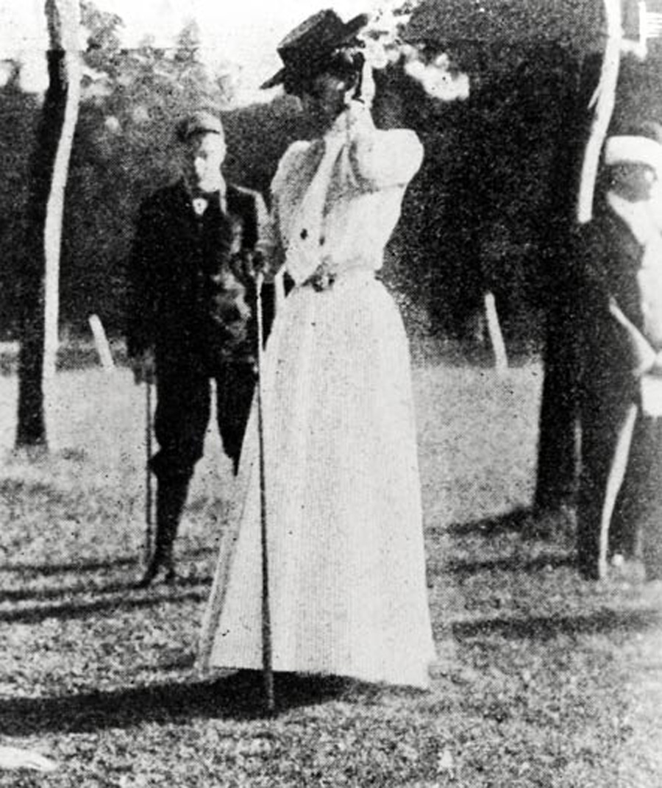
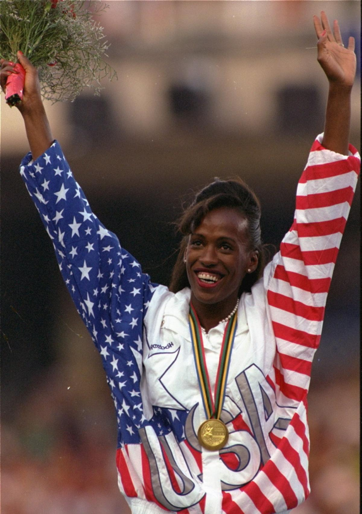
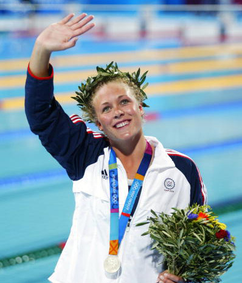

Women's Olympic History
Ancient Greece was the beginning of what we know as the Olympic games. The beginning of the 20th Century was the modern day revival of the Olympic games that we have grown familiar with.
The first Modern Day Olympic games began in 1896, the location of course, Athens, Greece. Fourteen different nations attended the games, and among them was of course, the United States. The U.S. had twenty-seven competitors which competed in 16 events out of a total of forty-three. All competitors were men. This is the only Olympics to date, where there were no women allowed to participate in the event.
The president of the International Olympic Committee, Pierre de Coubertin, said that women participating in sports was "indecent." Apparently, his influence and opinion, was not something others felt the same about. Women eventually made their Olympic debut in the 1900 summer games and over time have slowly dominated the summer games. In fact, in the last Summer Olympics in 2012, women competitors received 103 gold medals in comparison to their male counterparts, who won 42.
It's no surprise that times have changed since 1896, and women have shown that they are a dominate force to reckon with in terms of sports and competitions. Stats don't lie and I can't wait to see women perform in the 2016 Olympic Games in Rio.
Famous Olympians
Maragert Abbott
Margaret Abbott is the first American woman to win a gold Medal in the Olympics. She was a participant in the 1900 Olympics that took place in Paris. The event in which she won the gold medal was golf.
Jackie Joyner-Kersee
Probably one of the most recognizable names in the Olympics, Jackie Joyner-Kersee was a Track and Field athlete who competed in the summer games from 1984 to 1996. Her medals include 3 Gold, 1 silver and 2 Bronze. Kersee currently holds the world record in the heptathlon, long jump.
Jenny Thompson
Thompson is considered one of the best female swimmers to have competed in the olympics. At one time, she was the most decorated for both men and women. She has 12 medals all together, 8 of which are gold. Thompson competed in the summer games from 1992 to 2004. Dara Torres and Natalie Coughlin are also two olympic swimmers to have earned 12 medals a piece.
Battle of the Sexes
Medal Count
Who has more medals: Men or Women?
In the early days of the Summer Games, men dominated the medal counts. Mostly because many events were not open to women until later games. In the 1980's women began to catch up to the men. In 2012, women surpassed the men in the medal count. Choose a year in the drop down to view the medal counts.
Participants
Who Racks up the Most Medals?
Medals Overall:
Medals Won By Men or Women since the 1896 Summer Games
As years have since passed since 1896, you can view how the ladies have began to win as many medals or at times more medals than their male counterparts. Hover over the bar graph to view the overal medal counts for during the games.
Top Womens Olympic Sports: 1896-2012
USA Women Olympians By Year
Select and Year to view Olympic participants
Total Women for Chose Year:
| Name | Age | Sport | Country | Gold | Silver | Bronze | Year |
|---|